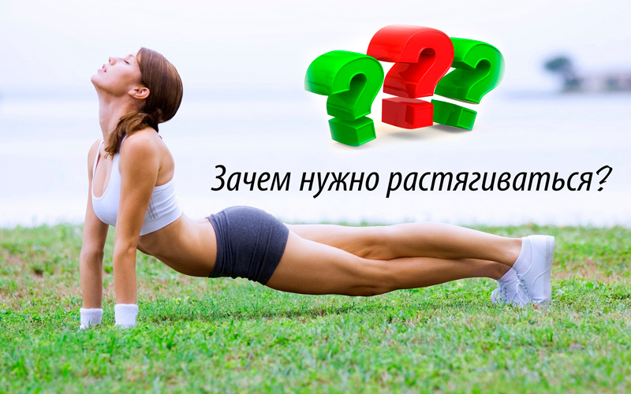

Зачем нужно растягиваться?

Растягивание должно стать частью вашей повседневной жизни. Так как растяжка способствует улучшению состояния организма.
Регулярное растягивание приносит много пользы:
- Уменьшает мышечную напряженность и заставляет тело расслабиться;
- Развивает координацию, позволяет двигаться свободнее и легче;
- Расширяет диапазон доступных движений;
- Помогает предотвратить такие травмы, как растяжение мышц (сильная, гибкая, разогретая мышца лучше выдерживает напряжение, чем сильная, жесткая и не растянутая);
- Подготавливает вас к физической активности и облегчает занятия, связанные с большими нагрузками, такими как бег, лыжи, теннис, плавание и езда на велосипеде; это своеобразный способ предупредить мышцы о предстоящем испытании;
- Помогает поддерживать гибкость вашего тела и препятствует уменьшению подвижности суставов;
- Учит вас ощущать свое тело: растягивая различные части тела, вы концентрируете на них свое внимание и устанавливаете с ними мысленный контакт, таким образом постепенно познавая себя;
- Помогает ослабить мысленный контроль за телом, которое начинает двигаться «само по себе», а не по команде вашего Я или повинуясь соревновательному инстинкту;
- Обеспечивает хорошее самочувствие.
С уважением, Анастасия Савина
Сайт: Stretching-guru.ru